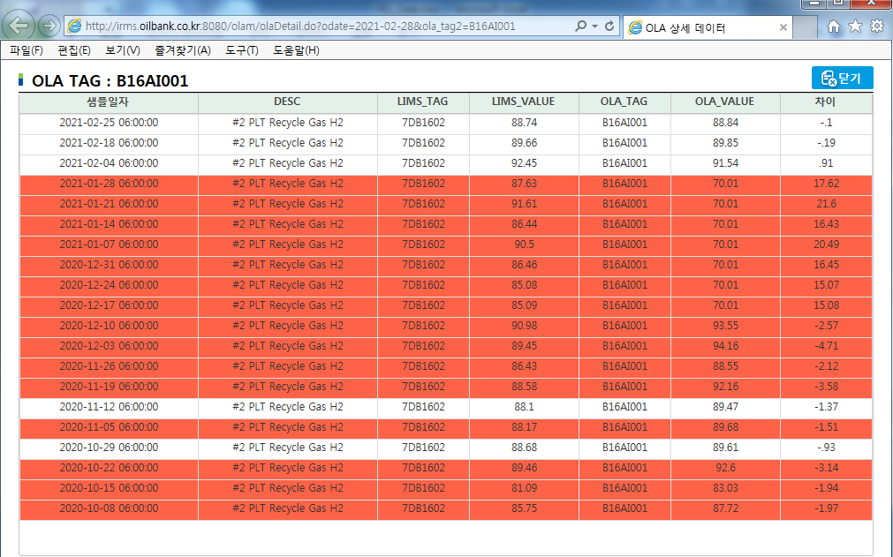
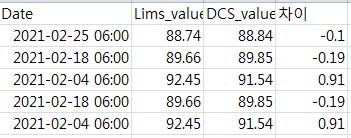
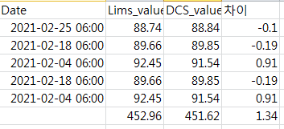
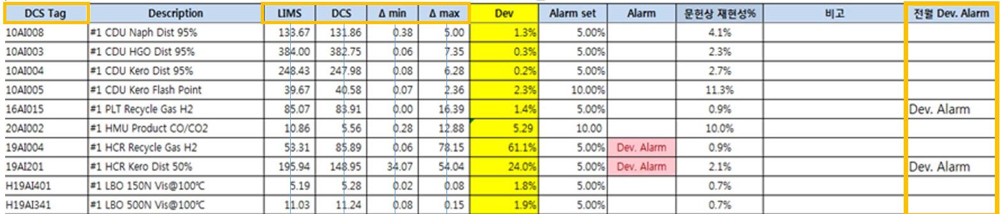

RPA TASK 월간보고서 작성
2021-02-19
Chapter 1 Introduction
월간보고서작성 업무의 일부 Flow에 대해 소개하고자 한다.
1) 특정 URL에 접근하여 Data crawling
2) 추출한 Data의 통계량 계산 및 Template파일에 Mapping
1.1 Task Flow
1.1.1 Url 접속

Figure.1 URL 입력
주어진 Primary key에 대해, data table이 존재하는 url로 접속
1.1.2 Data 추출

Figure.2 URL 입력
업무 시행일로부터 한달 전 날짜인 데이터만 추출 / 필요한 column만 추출
1.1.3 통계량 계산

Figure.3 합, 평균계산
각 column별 합을 구한 뒤 산술평균값을 계산
1.1.4 Template 파일에 Data Mapping

Figure.4 Data Mapping
계산한 평균값을 각 Primary key에 맞추어 Template 파일에 mapping한다.